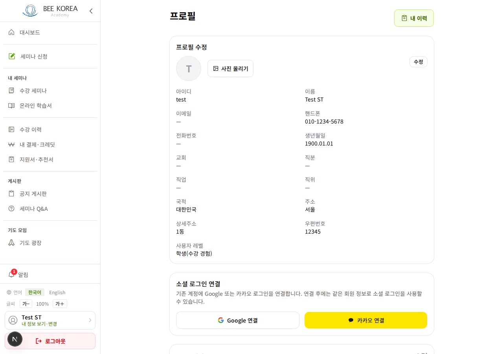
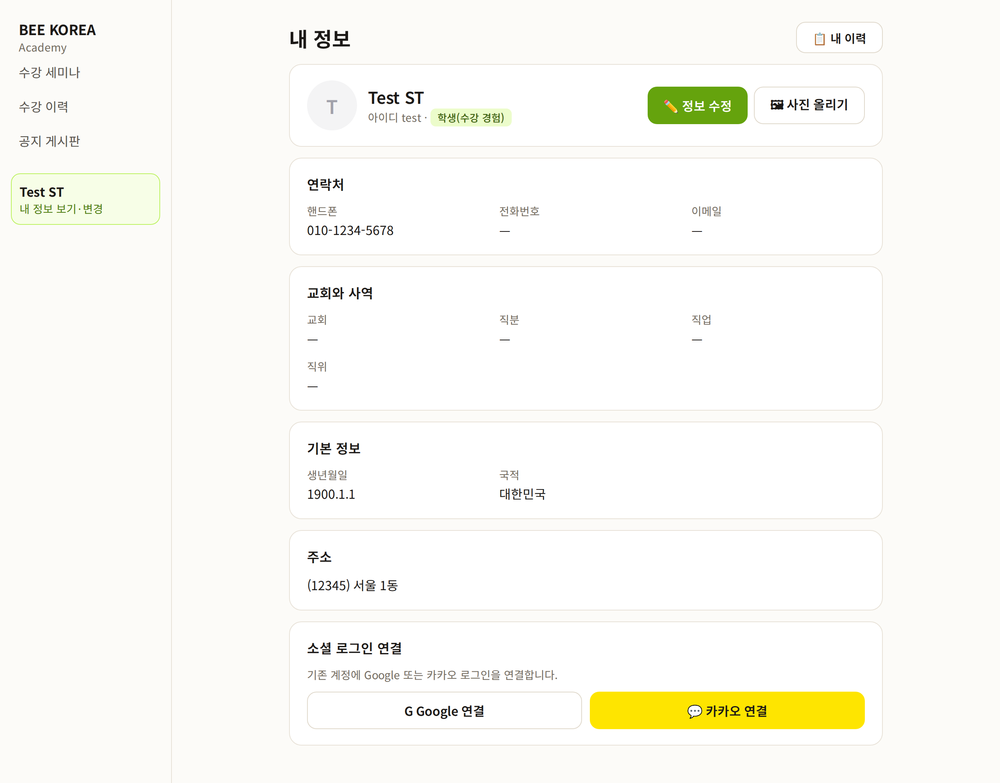
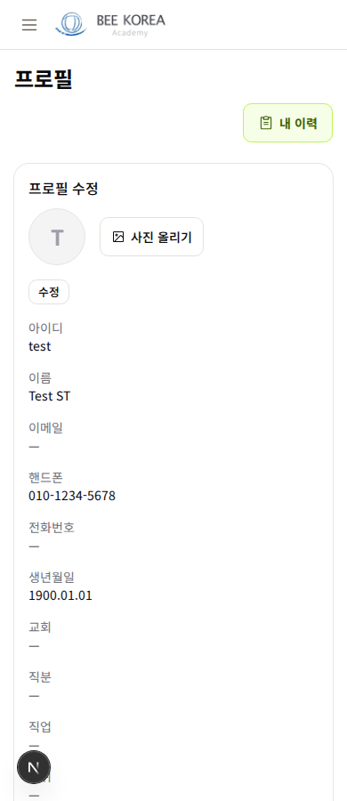
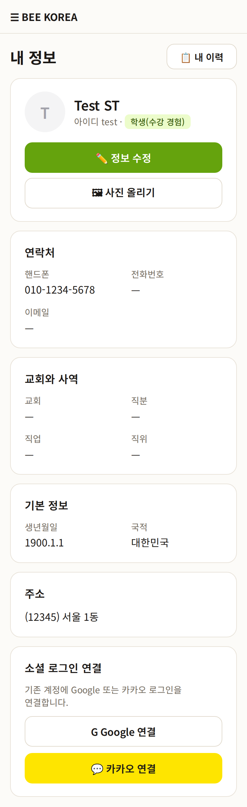

LMS 내 정보 — 디자인 시안 1차
2026-10-12 · 모든 사용자가 쓰는 화면 · 시험용 학생 계정 값 그대로(빈 값은 「—」, 지어낸 값 없음) · 아직 적용 전
무엇이 바뀌나
- 이름을 하나로 — 화면 「프로필」 · 카드 「프로필 수정」 · 사이드바 「내 정보 보기·변경」 → 「내 정보」
- 맨 위에 나 — 사진·이름·아이디·레벨 + [정보 수정] 큰 단추(지금은 오른쪽 위 작은 「수정」) · [사진 올리기]
- 묶음 — 연락처 · 교회와 사역 · 기본 정보 · 주소. 지금은 13칸이 한 판에 섞여 있습니다
- 주소 한 줄 — 「(12345) 서울 1동」. 지금은 주소·상세주소·우편번호 세 칸
- ✅ 이미 고침(배포): 핸드폰 「+821012345678」 → 010-1234-5678 · 값 보통 굵기 · 빈 값 「—」
PC


휴대폰


정해 주실 것
- 맨 아래 「크레딧」 카드(잔액 + 적립·사용 표)는 「내 결제·크레딧」 화면과 같은 내용입니다. 한 줄 「크레딧 35,000원 · 내 결제·크레딧에서 보기 →」로 줄일까요? (추천 — 같은 표를 두 곳에서 고치지 않게)
- 「직분」·「직위」 두 칸을 그대로 둘까요? 이름이 비슷해 헷갈릴 수 있습니다(직분 = 교회 안 · 직위 = 직장 안으로 저장돼 있음). 칸 이름만 「교회 직분」·「직장 직위」로 바꾸는 방법도 있습니다. (추천: 이름만 바꾸기)